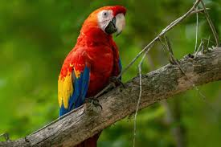

my website https://en.wikipedia.org/wiki/Caucasian_Shepherd_Dog The Caucasian Shepherd is a massive, fearless dog from the Caucasus Mountains, originally bred to protect property and land. Known for their strength and loyalty, they have a thick coat for cold weather. They are deeply loving toward their owner and family, forming strong bonds, but they need an experienced handler to guide them with confidence. https://en.wikipedia.org/wiki/Siamese_cat Siamese cats are an ancient breed from Thailand, known for their sleek bodies, blue almond-shaped eyes, and “pointed” coloring (darker ears, face, paws, and tail). They’re intelligent, affectionate, very vocal, and love human company. Low grooming needs but require lots of attention and mental stimulation. Lifespan: 10–20 years.
 https://en.wikipedia.org/wiki/Macaw Macaws are large, colorful parrots native to Central and South America. They’re intelligent, social, and can mimic human speech. Known for their long tails and bright feathers, they need lots of space, stimulation, and social interaction. Lifespan: up to 50+ years in captivity. https://en.wikipedia.org/wiki/Bald_eagle The Bald Eagle has been the national emblem of the United States since 1782 and a spiritual symbol for native people for far longer than that. These regal birds aren’t really bald, but their white-feathered heads gleam in contrast to their chocolate-brown body and wings. Look for them soaring in solitude, chasing other birds for their food, or gathering by the hundreds in winter. Once endangered by hunting and pesticides, Bald Eagles have flourished under protection https://en.wikipedia.org/wiki/Sea_turtleSea turtles are large marine reptiles found in oceans worldwide. They have streamlined shells, flippers for swimming, and migrate long distances. Most species are endangered due to habitat loss, fishing, and pollution. Lifespan: 50+ years, with some living over a century.
 https://en.wikipedia.org/wiki/Caucasian_Shepherd_Dog
https://en.wikipedia.org/wiki/Caucasian_Shepherd_Dog
 https://en.wikipedia.org/wiki/Siamese_cat
https://en.wikipedia.org/wiki/Siamese_cat
 https://en.wikipedia.org/wiki/Bald_eagle
https://en.wikipedia.org/wiki/Bald_eagle
 https://en.wikipedia.org/wiki/Sea_turtle
Sea turtles are large marine reptiles found in oceans worldwide. They have streamlined shells, flippers for swimming,
https://en.wikipedia.org/wiki/Sea_turtle
Sea turtles are large marine reptiles found in oceans worldwide. They have streamlined shells, flippers for swimming,